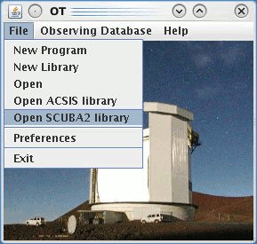
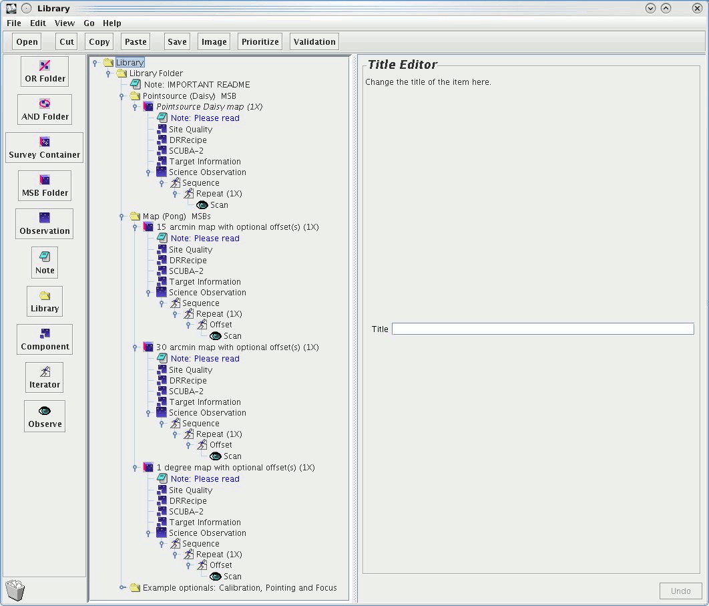
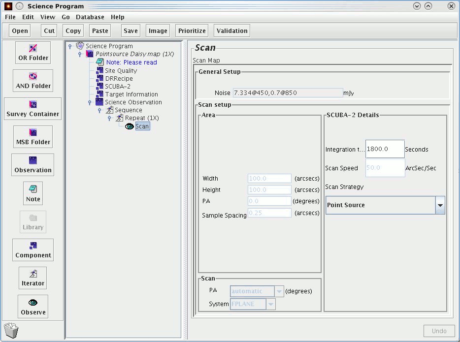
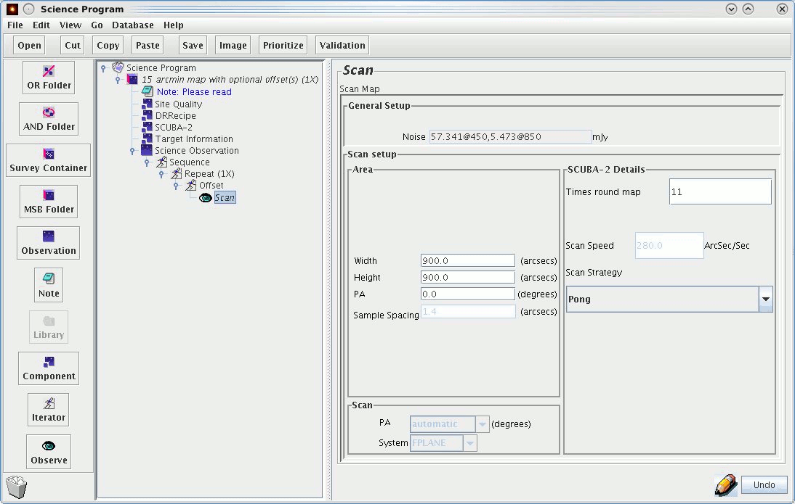
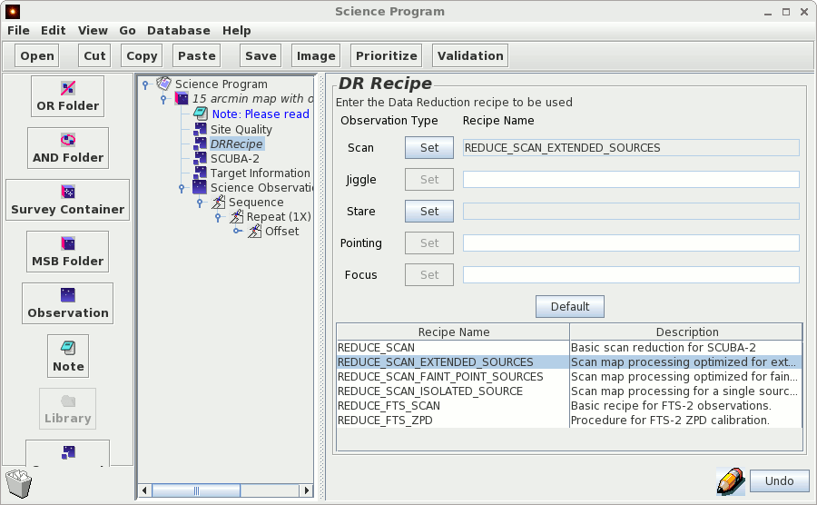

Back to SCUBA-2 Home page
Back to JCMT OT Primer Main Page
We are currently recommending a time limit on individual observations of not more than 40 minutes in length. If you find your observations exceed this time we suggest you increase the number of repeats.
If after reading this guide you have any questions about preparing your observations, please consult with your "Friend of the Project" (see http://www.jach.hawaii.edu/JCMT/allocations or your project page), or email jcmtot@jach.hawaii.edu.
To open up the existing SCUBA-2 library go to the JCMT OT root window and click on:

A window will pop up containing a list of folders. In the image below these folders have been expanded:

Daisies are the simplest case and there are only 2 things you need to edit:
(1) your target coordinates (in the 'Target Information' component)
(2) the integration time (in the 'Scan' component). The integration time is total time you want on source.
You will have calculated the latter when preparing your proposal using the time integration calculator. The minimum integration time for daisies is 15 seconds although the overhead for an observation this short will be quite high. The daisy pattern will keep running until the integration time expires and should not be interrupted before completion to gain the most even coverage. If you find the total time for your observation exceeds 40 minutes, reduce your integration time and increase the number of repeats.
The Scan Speed box is greyed out and cannot be edited. However the number in the box is a default and does not necessarily reflect the speed for your observation.
Below is an example of a 30 minute observation using the daisy mapping strategy:

Select the pong MSB you wish to use, copy and paste the (i.e. '15 arcmin map with optional offset(s)') folder. For pongs there are 2 thing you will need to edit:
(1) Target coordinates (in the 'Target Information' component)
(2) Times round map (in the 'Scan' component)
We recommend that the number of times round the map be selected to fit the maximum number of rotations into the 40 minute time limit. This is the default number in the template MSBs. You may use a fewer number of times round the map but more rotations results in a flatter map we strongly advise you not to go below approximately 10 minutes i.e. 3 times for a 15 arcmin map and 2 times round the map for a 30 arcmin map and 1 degree map. From the map sizes specified the telescope translator will implement other observing parameters (scan spacing and scan velocity) to produce an optimum map.
NOTE: Pong map sizes other than the 3 standard ones can be specified, but in those cases the observation system will use best-guesses for the pong parameters and thus may not be optimum. Users use non-standard sizes at their own risk.
The numbers in the greyed out boxes for Scan Speed and Sample Spacing do not reflect the actual values used and may not be edited. The PA also becomes irrelevant as a rotating pong will result in a symmetrical map.
You are unlikely to want to make use of the offset iterator for SCUBA-2 but if you do guidelines can be found here.
Below is an example of a 900" pong Note the height and width are adjusted to be 900" and the number of times around the map is set to 11.

When preparing your MSB's you can assign a data reduction recipe to your observations. The recipe you select will be applied when your data is processed at CADC. There are currently 2 main options:
(1) REDUCE_SCAN_EXTENDED_SOURCES - designed to maximise the recovery of extended structure. This uses the 'bright_extended' config file.
(2) REDUCE_SCAN_FAINT_SOURCES - designed to extract faint emission. This uses the 'blank_field' config file then applies a matched filter to your data.
To select the recipe you wish to use go to the DRRecipe component button and highlight the recipe you would like to add then click 'Set' next to the Scan button (for SCUBA-2).

The time limit of 40 minutes was chosen as a reasonable compromise for an MSB between maximising the number of times around the map in an observation and the interval between necessary constraints such as pointing, focusing, array setups and scheduling. It is possible to take data for longer but instrument drifts during azimuth tracking can cause some bolometers to lose their calibration during very long observations.
Another important factor is the amount of data the is passed to the map-maker. We can sequence at about 45 minutes and any request for longer than this will be split into multiple chunks. The duration of a single chunk that can be processed by the map-maker is constrained by the total RAM available in the computer and 40 minutes reflects the chunk of data the map-maker can handle on a computer with a reasonable (e.g. 60GB) amount of memory.
40 minutes is therefore a recommendation rather than a strict rule and if your MSB exceeds that length by a few minutes you need not break it up.
It is recommend that observations are taken below an elevation of 75 degrees for both daisy and pong maps. The precise pattern traced by the telescope for both of these patterns cannot be sustained at high elevations.
Calibration observations will be taken by the TSS every 2-3 hours. As usual a pointing is typical done every hour or after any large slew.
You are looking at an older version of JCMT OT. In this case you will have to insert the map sizes manually for pongs. You will also have to manually insert the DRRecipe component (this can be found under the 'component' button along the left hand side of the window).
This is due to the dark and flat-field scans which come at the beginning and end of every observation. These are used by to calibrate the bolometers and will add approximately a minute to the length of your MSB.
Don't worry, it is wrong. This will be fixed in the near future but believe the noise estimation from the time integration calculator instead of the OT.
You can build up a large area by tiling the pong maps. The legacy surveys have determined that the most effective way to tile pongs is in a hexagonal pattern. It is also possible to specify pong map sizes other than the 3 standard, but in those cases the observation system will use best-guesses for the pong parameters and thus may not be optimum. Users use non-standard sizes at their own risk. We recommend you don't exceed 7200'' x 7200'' for pong maps and be aware that the integration time does drop off considerably.
If you have a very strong source and are unconcerned about the background you can go only once around the pong. You can expect the background to be extremely variable however. We would recommend at least twice round and ideally not fewer than three times round.
If you have not previously stored anything to our database there will be nothing to retrieve, however space assigned for your project code is there for you when you create and first submit your MSBs. Create your project following the instructions above and store to the on-line database.
If you have a large number of sources you may want to use the survey container; instructions on how to use this can be found here. Another option is to use the replication tool. This requires access to JAC machines and details can be found here.
Ensure that you have filled out the title of your project correctly (Title, PI, Country, Project ID), then go to 'Database' along the top menu and select 'Store to online database'. Once you have done this your friend of project will be able to access your MSBs and check them. For more details follow this link to the main OT primer page.